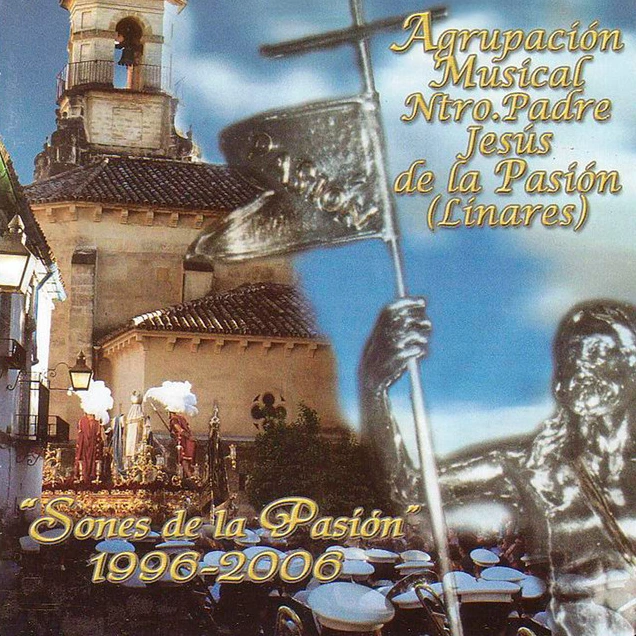

#DISCOGRAFÍA

- Hágase tu Voluntad José Manuel Mena Hervás
- Cirineo para Ti, Señor José Manuel Mena Hervás
- Mi Cristo de Bronce José M. Reina Romero
Pedro M. Pacheco Palomo - Luz de Jerusalén José Manuel Mena Hervás
- Cerca de Ti Popular
- Resurrección Antonio Velasco Rodríguez
- Sangre en Tus Clavos Nicolás M. Barbero Rivas
- Cristo de los Gitanos Antonio Velasco Rodríguez
- Penitente de Pasión José Manuel Mena Hervás
- Al Señor del Rescate Joaquín Gómez García
Juan Luis López Hernández

- O Salutaris Nicolás M. Barbero Rivas
- Ayudádle con la Cruz Pedro M. Pacheco Palomo
- Triunfo de Tu Santa Cruz Nicolás M. Barbero Rivas
- En Tu Pasión Juan Luis del Valle Pérez
- Reina del Amor Víctor Ramírez Pérez
- Cristo de los Favores Antonio Velasco Rodríguez
- Jesús del Prendimiento José Manuel Mena Hervás
- Virgen de la Hiniesta Antonio Gallego Díaze
- Al Cristo de los Estudiantes José Manuel Mena Hervás
- Dame tu Cruz Nazareno Juan Luis López Hernández

- Sones de la Pasión Miguel Ángel Lanzarote Fernández
- Orando al Cielo Víctor Ramírez Pérez
- De tus Penas… soleares Juan Luis Del Valle Pérez
- Cruz, Amor y Paz Raul Rodríguez Domínguez
- Cristo de las Misericordias Antonio Amodeo Ojeda
- Y Nació en Triana Esteban Torres Muñoz
- Con la Primavera… Juan Luis del Valle Pérez
- Redención, Pasión y Amargura José Manuel Mena Hervás
- Lloras en tu Soledad Nicolás M. Barbero Rivas
- Himno a Nra. Sra. de Linarejos Luis de Aramburu
- Introducción Antonio García Delgado
- La Salve José Martín Martín
- Pasa la Virgen del Refugio Manuel Rodríguez Ruiz
- Cinco Llagas Antonio Velasco Rodríguez
- La Oración del Huerto Agripino Lozano Perea
- Consuelo Gitano Antonio Velasco Rodríguez
- Reo de Muerte Nicolás M. Barbero Rivas
- Oración José Manuel Mena Hervás
- Sanctus Esteban Torres Muñoz